The small, fast browser for Windows
Bowser is open source, blocks ads and trackers from the first launch, keeps private tabs private, and runs your Chrome extensions.


The same page, without the ads
Bowser stops ads and trackers before they reach the page. Blocking is on from the first launch, with a switch per site when you need one.


Fits the way you work
Keyboard first, tidy by default, and arranged the way you like it.

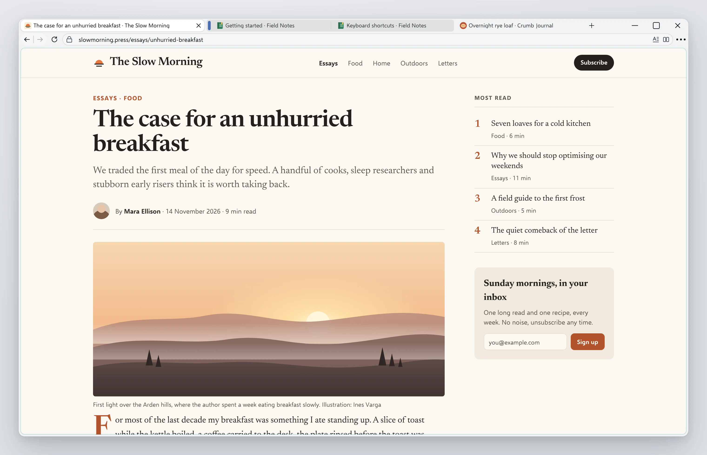


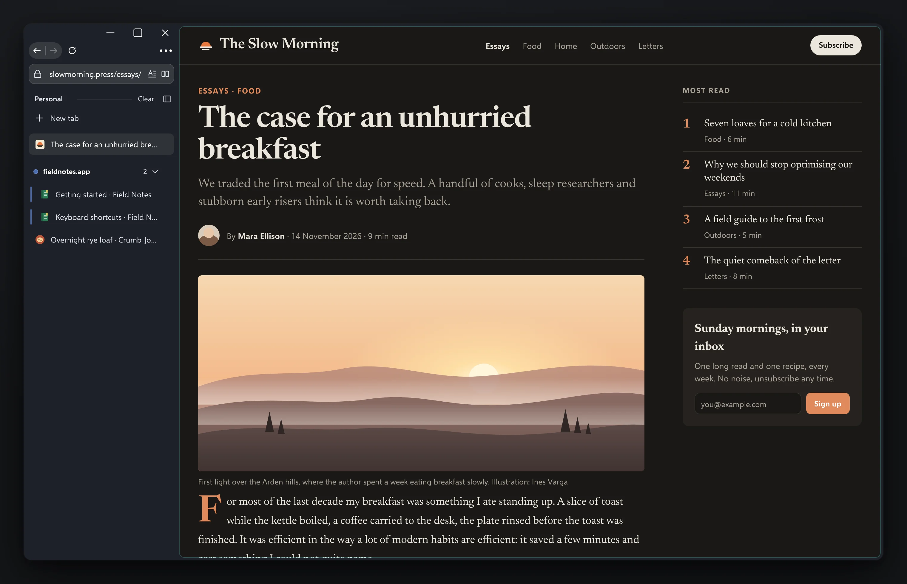
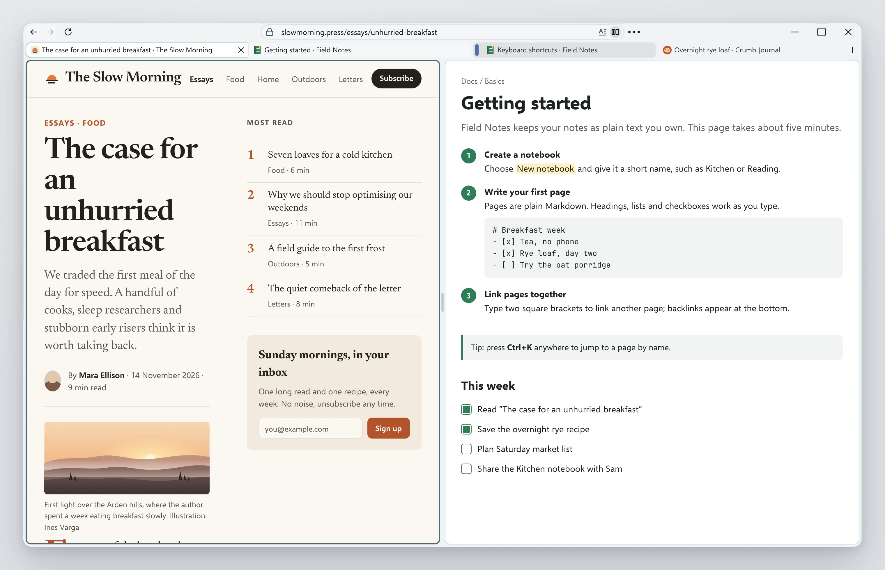
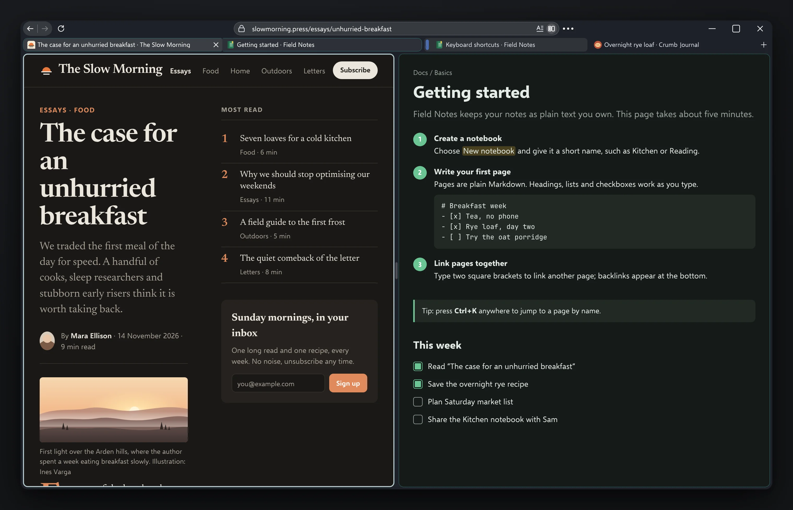
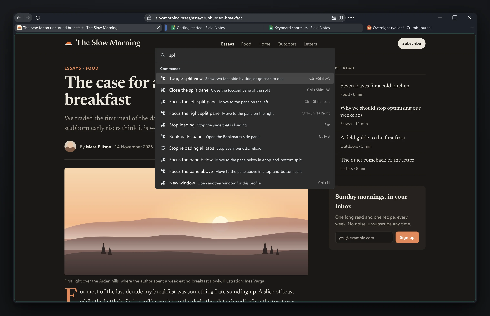

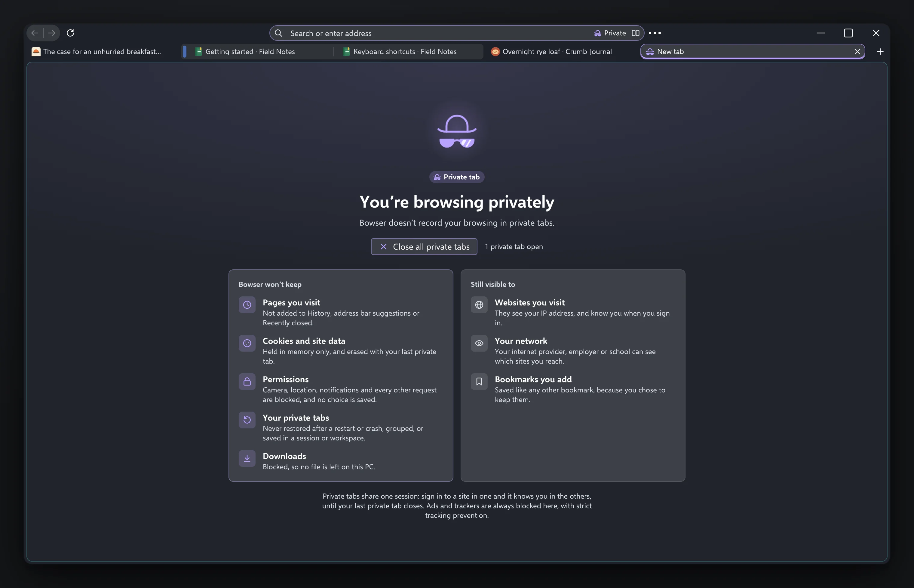
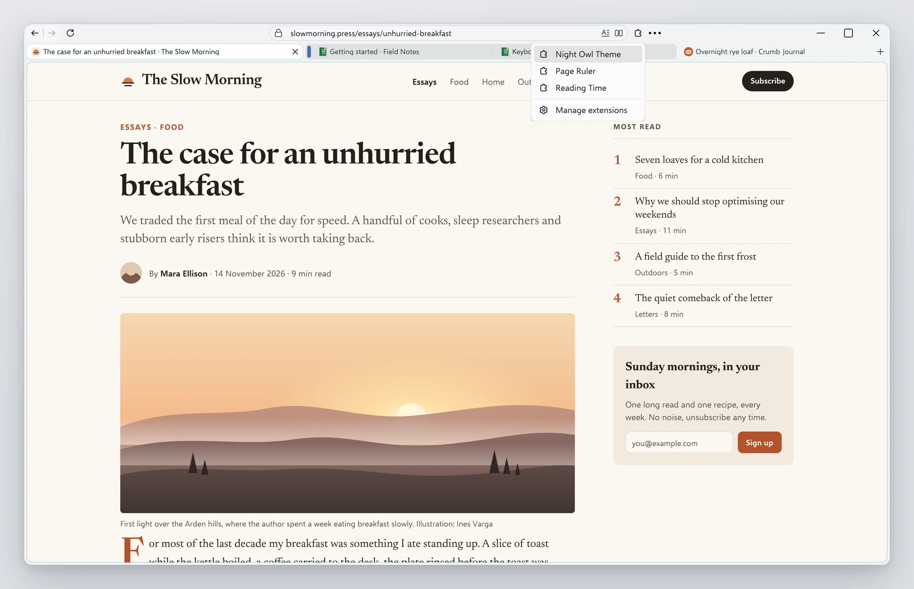
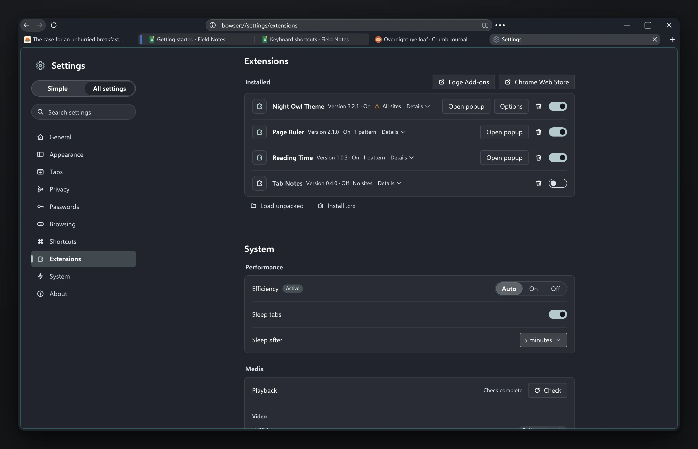
Everything in its place
The pages you use every day are part of Bowser, and they look like it.
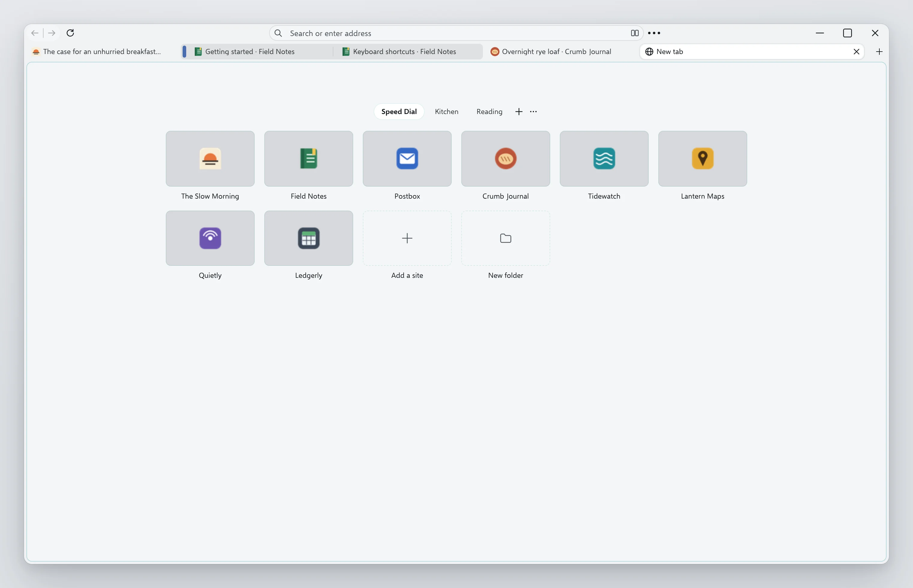
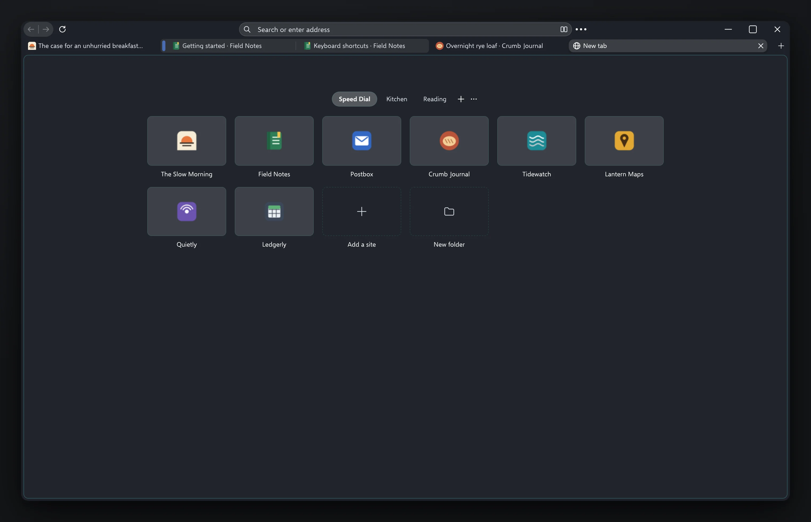
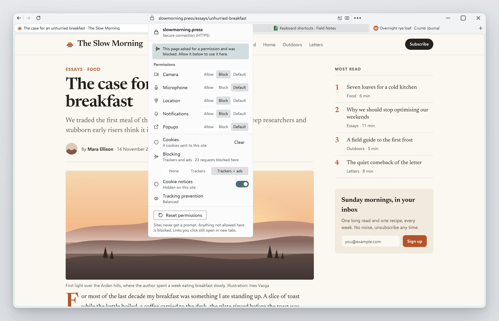

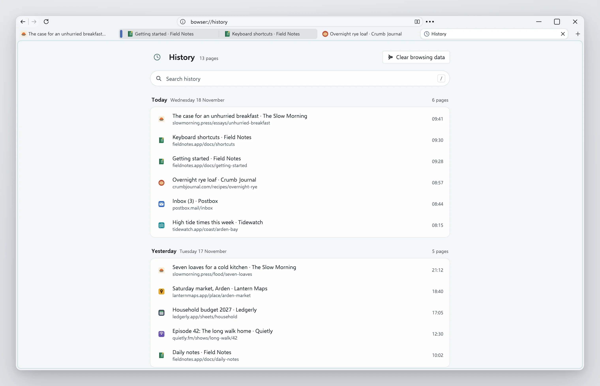
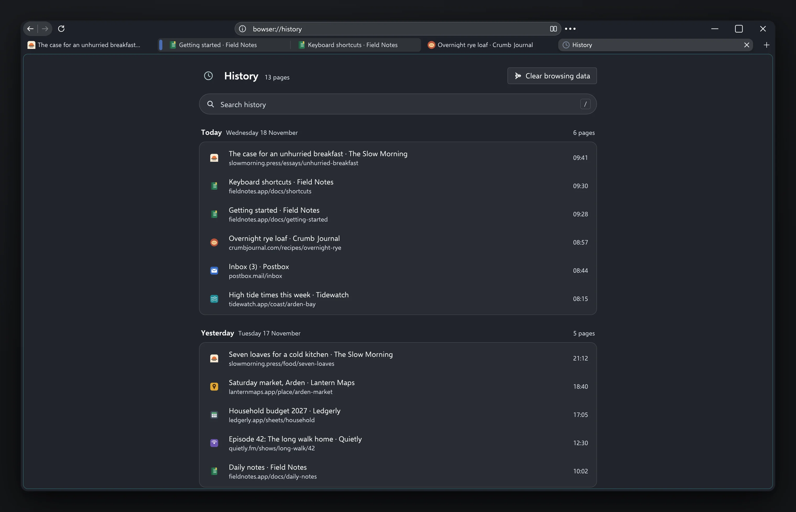
What Bowser stands for
A browser sees everything you do online. These are the promises that come with this one.
The whole browser is public on GitHub: the blocker and its built-in list, private tabs, extensions, the updater. Bowser never fetches filter lists by itself, so what it blocks is what you can read.
Browse the repositoryBowser has no hosted backend and sends no first-party telemetry. History, bookmarks, notes and the password vault stay in your profile folder on your PC.
Where your data livesOne native window, written in Rust, on the WebView2 runtime that Windows already shares and Microsoft keeps patched. The download is about 10 MB.
Build it yourselfReady when you are
Download Bowser, import your bookmarks, and give it a week.
Download for WindowsNeeds the WebView2 Runtime, which current Microsoft Edge already includes. Requirements and install steps
Questions, answered
Is ad blocking on when I install it?
Yes. Ads and trackers are blocked from the first launch. There is nothing to install or set up.
Which Chrome extensions work?
Install them from the Chrome Web Store or Edge Add-ons, from a .crx file, or from an unpacked folder. WebView2 runs only part of Chrome’s extension system, so a few extensions won’t work. Extensions don’t run in private tabs.
What do I need to run it?
64-bit Windows 10 or 11 with the Evergreen WebView2 Runtime. Current Microsoft Edge already includes it, and Microsoft keeps it patched.
Why does Windows warn me when I open it?
The build is not Authenticode-signed yet. SmartScreen may ask you to choose More info, then Run anyway. Each release lists its SHA-256 so you can check the file first.
Does Bowser collect my data?
Bowser has no hosted backend and no first-party telemetry. WebView2's Microsoft Defender SmartScreen checks are on where Windows allows them, and those may send visited addresses to Microsoft.